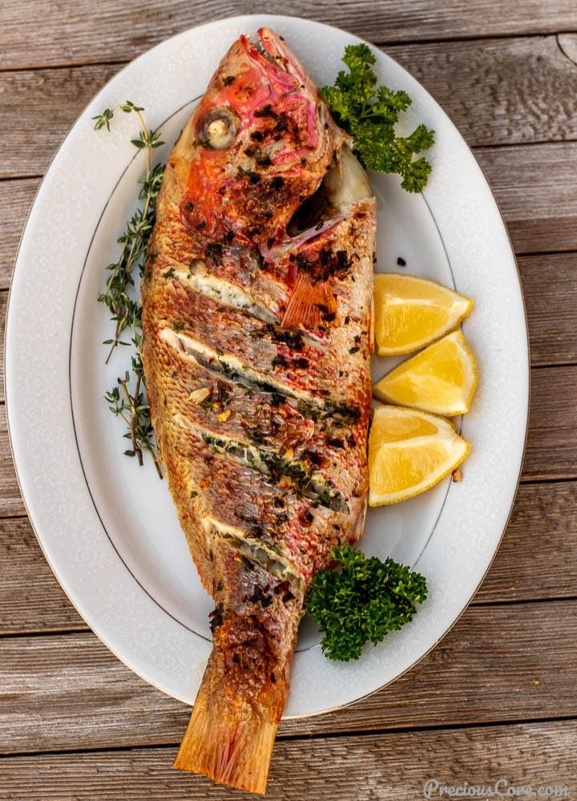
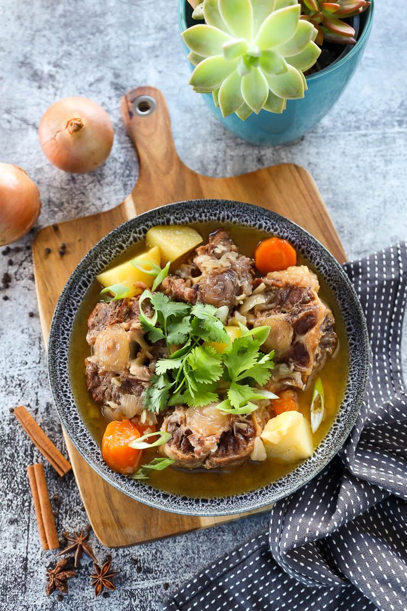
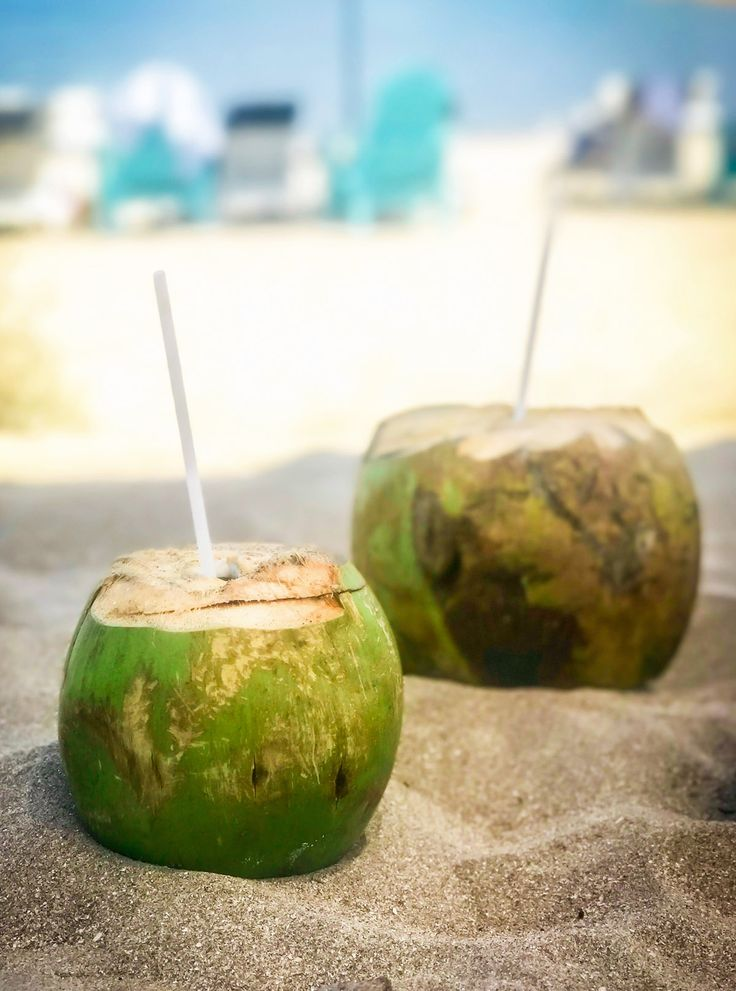

Food & Drink
Grilled Fish and Seafood
Fresh fish and seafood grilled or cooked with local spices, served with rice, sambal, and vegetables.
Traditional Soups and Stews
Comforting soups and stews like spicy fish soup and shrimp stew, perfect for a warm, hearty meal.
Tropical Desserts and Beverages
Enjoy desserts like coconut ice cream and mango pudding, paired with refreshing drinks like iced coconut water and smoothies.